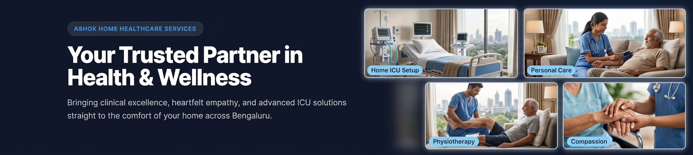

About Ashok Home Healthcare Services
Healing Begins at Home: Clinical Excellence Delivered to Your Doorstep
Bridging the gap between hospital discharge and long-term recovery across Yeshwanthpur, Malleshwaram, Rajajinagar, Hebbal, and Greater Bangalore.
At Ashok Healthcare Services, we believe that true healing happens best in the comfort, warmth, and dignity of home. Founded on a core commitment to clinical precision, compassionate care, and rapid response, we provide hospital-grade medical solutions—including 24/7 Home ICU setups, professional bedside nursing, neuro-rehabilitation, and elderly care—directly to families across Bengaluru.
Transforming healthcare with heart and vision
With over a decade of hands-on experience in clinical and emergency care, leadership, and healthcare management, our founder brings unmatched expertise and a passion for service:
Ashok Doddamani
"When a patient leaves the hospital, their recovery journey is only half complete. Families often face immense stress trying to manage post-discharge care, ICU machinery, and continuous nursing. Ashok Healthcare was created to eliminate that anxiety by bringing hospital-standard care straight to your bedroom."
LEADERSHIP AT A GLANCE
| Metric / Milestone | Clinical Background & Leadership Impact |
|---|---|
| Founder | Ashok Doddamani (Diploma Nursing, BSc Nursing, BCom, MBA) |
| Clinical Experience | 10+ Years of direct bedside nursing & clinical operations management |
| Hospital Leadership | Executive Manager at Apollo Hospitals (2 Years) |
| Home Care Expertise | General Manager in Home Healthcare & Rehabilitation (5 Years) |
| Emergency Honors | 5-time "Best EMT" winner & National Award nominee (108 Emergency) |
| Global Recognition | Certificate for International Excellence (2026) by Global Research |
Founded on April 1, 2023, Ashok Healthcare was built on the foundation of hands-on nursing and emergency medical services. Having managed critical patient transfers and emergency hospital care for over 10 years, our founder recognized a vital gap in Bangalore’s healthcare ecosystem: the lack of reliable, rapidly deployable, and clinically supervised home medical care.
Today, based out of Yeshwanthpur, we serve as a trusted clinical partner for doctors, hospitals, and thousands of families across North Bengaluru.
OUR GUIDING PRINCIPLES
OUR MISSION
To make hospital-grade healthcare accessible, affordable, and compassionate for every family in Bangalore by bringing expert nursing, modern medical technology, and personalized care home.
OUR VISION
To become Karnataka’s most trusted home healthcare and rehabilitation ecosystem, setting international benchmarks in patient safety, clinical quality, and rapid home ICU setup.
Core Values That Guide Our Care
Clinical Integrity
We operate under strict doctor-approved clinical protocols. Every medication chart, vital log, and wound dressing adheres to NABH hospital standards.
Compassion & Dignity
We treat every patient like family—ensuring senior citizens, bedridden individuals, and recovering surgical patients maintain complete dignity.
3-Hour Rapid Deployment
Emergency care cannot wait. Our localized infrastructure in Yeshwanthpur allows us to deliver equipment and critical care nurses within 3–4 hours.
Uncompromising Vetting
Every nurse, caretaker, and therapist on our team undergoes a strict 3-tier check: clinical credentialing, past employment verification, and local police verification.
WHAT MAKES ASHOK HEALTHCARE DIFFERENT?
How We Compare to National Healthcare Aggregators
Ex-Apollo Medical Leadership
Unlike generic staffing agencies or corporate tech aggregators, our agency is led directly by a healthcare professional with a nursing and hospital management background.
Dedicated Local Operations Hub
Located right in Yeshwanthpur, our emergency dispatch team provides immediate coverage to Malleshwaram, Rajajinagar, Mathikere, Hebbal, Peenya, Jalahalli, and Yelahanka.
End-to-End Integrated Solutions
From 24/7 bedside nursing and physiotherapy to our equipment division (Ashok Surgical) and 24/7 ALS Ambulances, we handle every aspect of home recovery under one roof.
24/7 Technical Backup
ICU machinery demands 100% uptime. If an oxygen concentrator or ventilator issues an alert at midnight, our local technicians are dispatched immediately with a replacement unit.
OUR CARE PROCESS & QUALITY ASSURANCE
A rigorous 4-step framework guaranteeing patient safety, clinical precision, and doctor-approved care.
Consultation
Call our helpline +91 78297 53538.
Clinical Assessment
Clinical lead visits home to inspect setup & needs.
Custom Care Plan
Doctor-approved plan for nursing & equipment.
Quality Supervision
Weekly supervisor audits & 24/7 technical backup.
FREQUENTLY ASKED QUESTIONS
About Our Organization
Where is Ashok Healthcare located, and which areas in Bangalore do you cover?
Our primary corporate and operations hub is located at #28, Ground Floor, 4th Cross Rd, A.T. Street, Dr. Ambedkar Nagar, Yeshwanthpur, Bengaluru. We provide 24/7 rapid response services across Yeshwanthpur, Malleshwaram, Rajajinagar, Mathikere, Hebbal, Peenya, Jalahalli, Yelahanka, Sadashivanagar, and Greater Bangalore.
What qualifications do your home healthcare nurses and caregivers possess?
Our nursing staff consists of qualified GNM (General Nursing and Midwifery) and BSc Nursing professionals with hands-on hospital experience. Our critical care nurses are CCRN-certified for ICU management. Bedside caretakers receive extensive practical training in personal hygiene, patient mobility, and fall prevention.
How does Ashok Healthcare ensure safety for elderly patients living alone?
Every staff member undergoes a strict 3-tier background check comprising credential verification, reference checks, and mandatory local police background checks. In addition, our clinical supervisors conduct unannounced weekly home visits to monitor care quality and safety.
Does Ashok Healthcare coordinate with my hospital doctor after discharge?
Yes. We design custom home care plans strictly based on your hospital discharge summary. Our nurses maintain detailed daily clinical flowcharts (tracking vitals, medication timings, intake/output) that are shared directly with your primary treating physician.